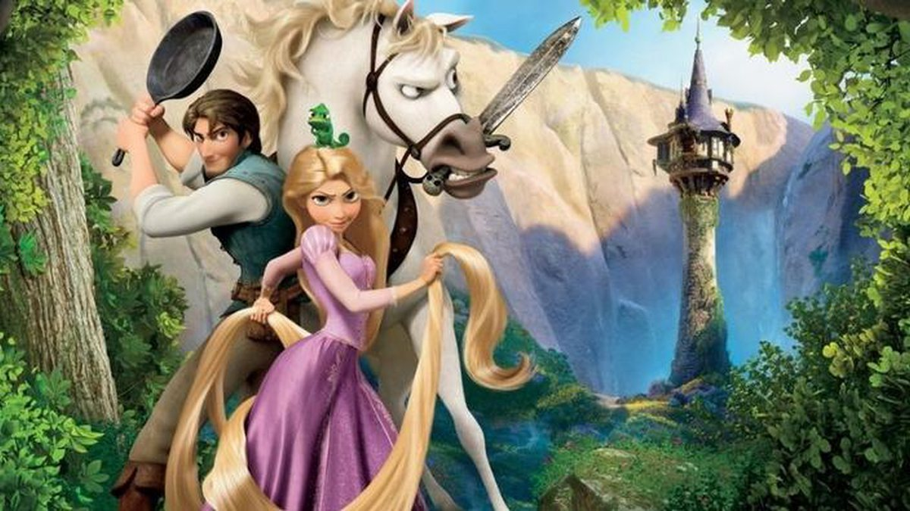
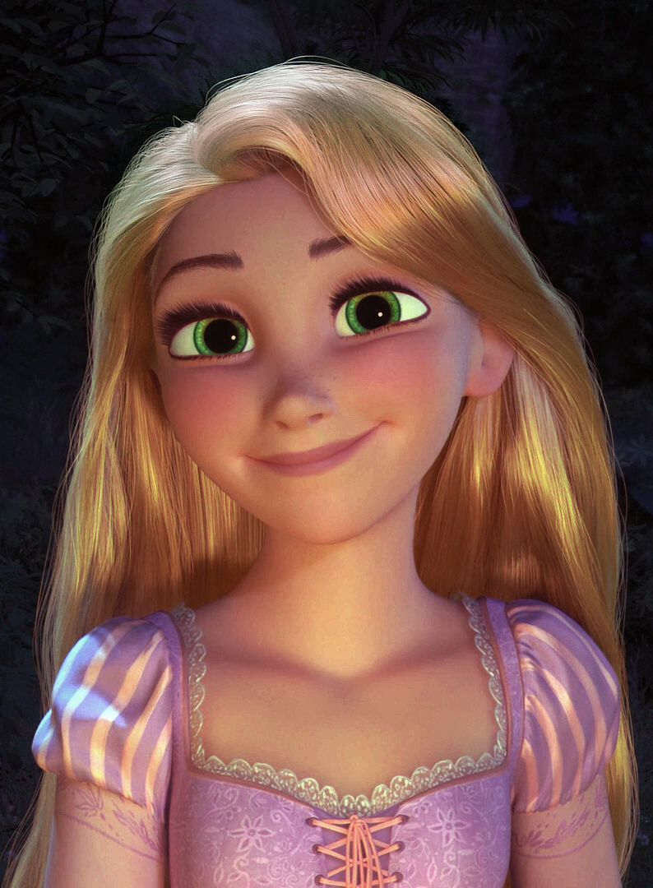
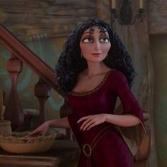
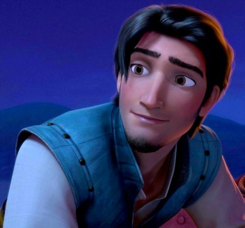
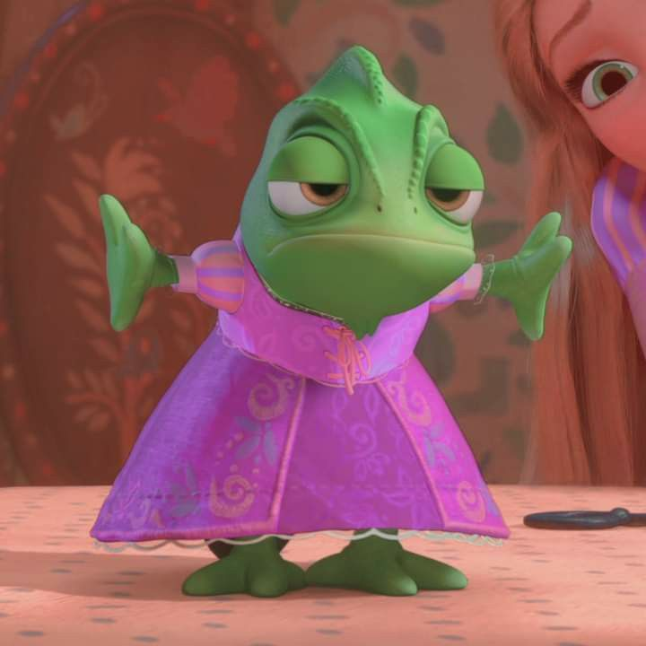

O bandido mais procurado do reino, Flynn Rider, se esconde em uma torre e acaba prisioneiro de Rapunzel, residente de longa data do local. Dona de cabelos dourados e mágicos com 21 metros de comprimento, ela está trancada há anos e deseja desesperadamente a liberdade. A adolescente determinada faz um acordo com o rapaz, e, juntos, partem para uma aventura emocionante.

Rapunzel
Rapunzel é uma menina de 18 anos que é conhecida por seus cabelos dourados, que chegam a medir 21 metros de comprimento.Tendo passado toda a sua vida isolada em uma torre com pouca coisa para fazer, ela é eficientemente educada na literatura, e talentosa em quase todas as áreas,a sua maior paixão é arte.

Gothel
Quando Gothel canta para a flor e acaricia suas pétalas, ela torna-se mais jovem e bonita, entre 20 e 30 anos de idade. Ela está determinada a manter este segredo do resto do mundo e esconde a flor para manter-se bonita e jovem para sempre. Centenas de anos se passaram, e nesse tempo um reino próximo prospera.

José Bezerra/Flynn Rider
um bandido procurado que descobre refúgio na torre isolada de Rapunzel após roubar uma coroa. Lá, ele é capturado e chantageado por Rapunzel, que esconde a coroa para convencer Eugene a guiá-la até as lanternas flutuantes a tempo para seu aniversário de dezoito anos

Pascal
Pascal é um amigo verdadeiro e leal a Rapunzel. Mesmo que ele não pode se comunicar verbalmente, é claro que ele é um dos responsáveis para apoiar Rapunzel para sair da torre.

Maximus
Maximus é o cavalo do palácio que pertencia ao ex-capitão do rei e da Rainha. Embora visto como um modo de transporte e animal de estimação para alguns, Maximus é na verdade muito mais feroz e eficiente do que o ex-capitão, ele próprio, comprovando a representar muito mais do que uma ameaça para Flynn Rider durante seus dias como um ladrão, e teria capturado ele, se Rapunzel não tivesse interferido.